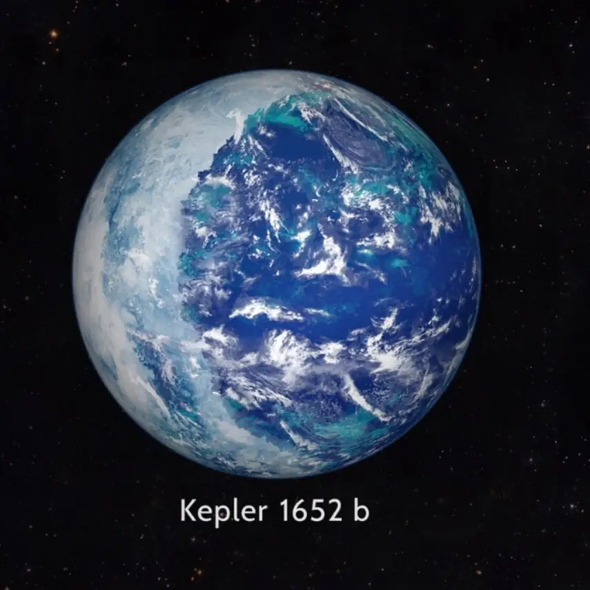

Kepler‑1652 b — Exoplaneta

Introdução e História
Kepler‑1652 b é um exoplaneta do tipo super‑Terra orbitando a estrela anã vermelha Kepler‑1652, situado na constelação do Cisne, a cerca de 822 anos‑luz da Terra. Foi detectado pelo telescópio espacial Kepler por meio do método de trânsito e confirmado em 2017.
O planeta foi inicialmente identificado como candidato em 2013 e posteriormente validado como planeta confirmado após análises adicionais dos dados coletados pelo Kepler.
Características Físicas: Massa, Tamanho e Órbita
Kepler‑1652 b possui um raio estimado em cerca de 1,60 vezes o da Terra, indicando uma composição potencialmente rochosa ou rica em materiais densos.
Ele completa uma órbita ao redor de sua estrela em aproximadamente 38,1 dias terrestres, a uma distância média de aproximadamente 0,1654 AU.
A temperatura de equilíbrio estimada é de cerca de 268 K (≈ −5 °C), semelhante em conceito à da Terra, embora as condições reais dependa de atmosfera e outros fatores desconhecidos.
Potencial de Habitabilidade
- 💧 Zona Habitável: Kepler‑1652 b está localizado dentro da zona habitável teórica de sua estrela, a região em que a água líquida poderia existir na superfície sob condições adequadas.
- 🔥 Estrela Anã Vermelha: A estrela hospedeira, sendo menor e menos luminosa que o Sol, favorece que planetas mais próximos possam ficar em temperatura temperada.
- ❓ Atmosfera Desconhecida: Ainda não houve observações diretas de atmosfera, composição superficial ou clima.
Esses fatores fazem de Kepler‑1652 b um candidato interessante para estudos de habitabilidade, embora muitas incertezas permaneçam.
Curiosidades
Kepler‑1652 b foi identificado como potencial super‑Terra habitável ainda em 2013, mas só teve sua existência confirmada em 2017 após análises rigorosas dos dados de trânsito.
Apesar da distância considerável (~822 anos‑luz), sua posição dentro da zona habitável do sistema o torna um dos exoplanetas mais estudados neste contexto.
Como muitas descobertas de exoplanetas, todas as representações visuais são artísticas e não fotografias reais.
Origem do Nome
O nome “Kepler‑1652 b” segue a convenção astronômica científica: a designação da estrela hospedeira (Kepler‑1652) seguida da letra “b” indicando ser o primeiro planeta confirmado daquele sistema, conforme catálogos científicos.
Referências
- Wikipedia. Kepler‑1652b. Disponível em: https://en.wikipedia.org/wiki/Kepler-1652b. Acesso em: 28 dez. 2025.
- NASA. Kepler‑1652 b — Exoplanet Exploration / NASA Science. Disponível em: https://science.nasa.gov/exoplanet-catalog/kepler-1652-b/. Acesso em: 28 dez. 2025.